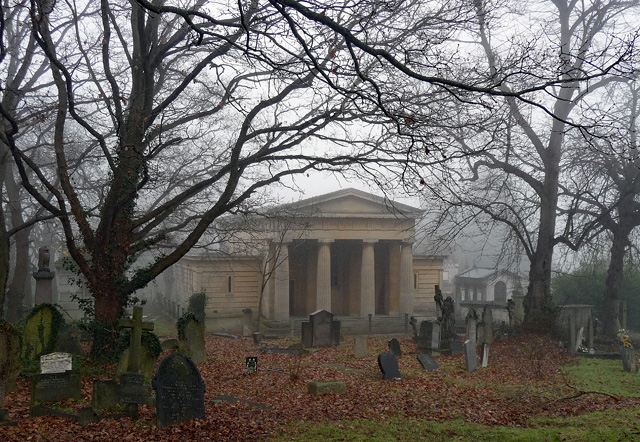
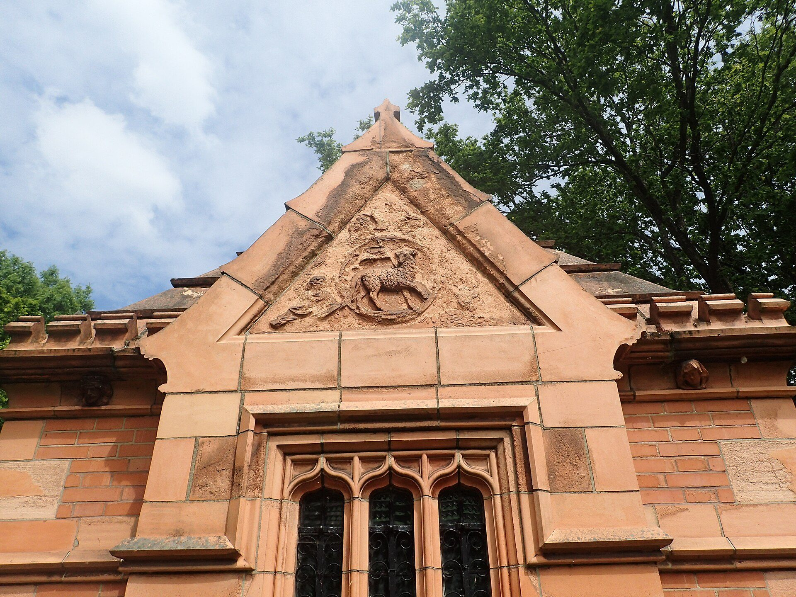

Una semana, sin agenda
Esta guía no os dice qué hacer el martes. Londres no funciona así: se tarda media hora en cruzarla, llueve cuando quiere y con Julia por medio los planes duran lo que duran. Lo que hay aquí son seis zonas, y cada zona trae sus cosas que ver, sus paseos y dónde comer allí mismo. Elegís una por día, o dos si caen cerca, y os sobra tiempo.
Las seis zonas, en una línea cada una
- Brick Lane y Shoreditch — donde se come mejor y más barato de todo Londres. Beigels de salt beef, barbacoa de humo y curry. Mercados el domingo.
- King's Cross — los gasómetros victorianos convertidos en plazas, las fuentes donde se moja la niña y el andén 9¾. Media tarde larga.
- Soho, Chinatown y Covent Garden — la tienda de Harry Potter buena, el sushi a mitad de precio y sitios de comer por todas partes.
- Borough y la orilla sur — el mercado de comida, la Tate, el paseo del río y el mejor grilled cheese del país.
- South Kensington — dinosaurios, ciencia con botones y el parque con el barco pirata. El plan seguro si llueve.
- Greenwich y el río — se va en barco, hay un velero, un parque en cuesta y el meridiano. El día completo más fácil con niños.
Y aparte, dos cosas que no son zona: lo de Julia, todo junto en una sección, y los paseos, para cuando queráis andar sin destino.
El tiempo, día a día
Varios días con lluvia probable (sábado 29, domingo 30, lunes 31). No pasa nada: cae media hora y escampa. Chubasquero con capucha mejor que paraguas, que con el viento no sirve. Ojo al fin de semana del carnaval, que es todo en la calle: sábado 29 al 100%, domingo 30 al 69%, lunes 31 al 69%. Con Julia, chubasquero puesto desde casa y calzado cerrado.
Dónde está cada cosa
Londres se entiende con el río. Todo lo que os interesa está a un lado o al otro del Támesis y, salvo Greenwich, dentro de las zonas 1 y 2: de punta a punta son 30 o 40 minutos de metro. Cada chincheta está en su sitio de verdad, y si la pulsáis os lleva a su apartado.
Brick Lane, Spitalfields y Shoreditch
Medio día largo · el domingo es el mejor díaSi en toda la semana solo hacéis una zona bien, que sea esta. Es el barrio donde fue cayendo todo el que llegaba a Londres: hugonotes franceses en el XVII, judíos del este de Europa en el XIX, bangladesíes en el XX. Cada oleada dejó su comida, y por eso aquí se come mejor y más barato que en el centro. Ahora encima es la zona del arte callejero y de los mercados. Se recorre entera andando.
El paseo, en orden unas tres horas, parando
Empezad en Old Spitalfields Market (metro Liverpool Street), que es mercado cubierto con puestos de comida y tenderetes. Salís por Brushfield Street con la iglesia de Hawksmoor enfrente, cruzáis a Brick Lane y la subís entera: primero la parte de los curries con sus carteles de neón, luego los murales —meteos por Hanbury Street y Fournier Street a mirar fachadas— y al final del todo, donde la calle se junta con Bethnal Green Road, las dos panaderías de beigels. De ahí, si quedan piernas, Arnold Circus, cinco minutos al norte: una plaza circular con un quiosco de música encima de una colina hecha con los escombros del barrio de chabolas que había antes. Fue la primera vivienda social del mundo, en 1900.
Lo que hay que ver mientras se pasea
- Los murales — no hay que buscarlos, están por todas partes. Los más fotografiados: la grulla enorme de ROA en Hanbury Street y lo que haya ese mes en las persianas de Fournier Street. Cambian solos cada pocas semanas.
- Old Spitalfields Market — Horner Square, E1 6EW. Abierto todos los días (10:00–18:00, jueves de antigüedades, domingo el más grande). Mitad ropa y artesanía, mitad puestos de comida.
- Christ Church Spitalfields — la iglesia blanca de Nicholas Hawksmoor, de 1729, con un pórtico desproporcionado a propósito. Se entra gratis.
- Fournier Street — casas de tejedores hugonotes del XVIII, con los ventanales enormes del taller en el último piso para aprovechar la luz. Están intactas.
- La Gran Mezquita de Brick Lane — el mismo edificio fue capilla hugonota, sinagoga y ahora mezquita. Todo el barrio en una fachada.
- Columbia Road — solo los domingos por la mañana, y solo eso.
- Boxpark y Shoreditch High Street — la parte moderna, contenedores apilados con bares. Sirve para tomar algo, no para venir a propósito.
Qué y dónde comer en Brick Lane y Shoreditch
- Beigel Bake — 159 Brick Lane, E1 6SB · la puerta amarilla · El sitio. Una panadería estrecha con luz de fluorescente, abierta 24 horas los 365 días desde 1974, donde siempre hay cola y siempre va rápido. Piden a gritos el pedido, cortan el salt beef a cuchillo delante de vosotros y os lo meten en un beigel hervido. Es de las pocas cosas que quedan del Londres judío del East End. Pedid Un salt beef beigel with mustard and pickle. Si no queréis mostaza inglesa, decidlo: pica de verdad 🕐 abierto 24 h · 💷 unas 8–9 £ el beigel de carne, y menos de 2 £ los de queso · efectivo y tarjeta 📍 Maps
- The Beigel Shop — 155 Brick Lane, E1 6QL · la puerta blanca, dos portales antes · La de al lado, la rival de toda la vida. Presume de ser la primera panadería de beigels de Brick Lane y las dos familias fueron la misma. Los londinenses se pelean por cuál es mejor y la respuesta honesta es que están igual de buenas. Pedid Lo mismo que en la otra, para poder opinar. O el beigel de arenque, que allí no siempre hay 🕐 24 h · 💷 igual de barato · si en una hay veinte de cola y en la otra cinco, la respuesta es fácil 📍 Maps
- Smokestak — 35 Sclater Street, E1 6LB · a dos calles de Brick Lane · Barbacoa en un arco de ferrocarril: paredes negras, mucho humo y brisket ahumado doce o quince horas sobre leña de roble. Empezó siendo un puesto de mercado. Es la comida más seria de esta lista y aun así se come con las manos. Pedid El brisket bun con encurtidos si vais con prisa, o el brisket entero para compartir. Las costillas ahumadas nunca fallan 🕐 L–V 12:00–15:00 y 17:30–23:00 · S 12:00–23:00 · D 12:00–21:00 · 💷 unas 30–40 £ por persona · reservan, pero guardan mesas para quien llega sin reserva 📍 Maps
- Smoking Goat — 64 Shoreditch High Street, E1 6JJ · Tailandés del norte, de la comida que allí se pide para acompañar la bebida: picante, ahumado y para compartir. Cocina sobre brasa, carta corta que cambia y música alta. Nada que ver con el pad thai de siempre, y por eso merece la pena. Pedid La chuleta de cerdo a la brasa y una ensalada de las picantes. Avisad de que la niña come, que aquí pica en serio 🕐 L–S 12:00–23:00 · D 12:00–22:00 · 💷 unas 25–35 £ por persona · sin reserva salvo grupos: se llega y se espera 📍 Maps
- Tayyabs — 83–89 Fieldgate Street, E1 1JU · Whitechapel, 15 min andando · Punyabí desde 1972 y siempre lleno de gente del barrio. Las chuletillas de cordero llegan a la mesa chisporroteando en su plancha. Es ruidoso, rápido y muy barato para lo que dan. Aquí es donde va a comer curry quien vive en Londres, no a los restaurantes con neones de Brick Lane. Pedid Las lamb chops sí o sí, un karahi para compartir y pan naan. Traeos vuestra cerveza: no venden alcohol pero dejan traerlo 🕐 todos los días 12:00–23:30 · 💷 unas 20 £ por persona · reservad o id a las 18:00: a las 20:00 hay cola en la calle 📍 Maps
- Poppies Fish & Chips — 6–8 Hanbury Street, E1 6QR · junto a Brick Lane · Para quitarse la espina del fish and chips sin acabar en una freiduría triste. Decorado de los años cincuenta, camareras con pañuelo y el pescado frito al momento. Turístico, sí, pero está bueno. Pedid Cod and chips con puré de guisantes (mushy peas) y vinagre de malta por encima. Es lo que hace la gente de aquí 🕐 todos los días hasta las 23:00 · 💷 unas 18–22 £ el plato de bacalao · hacen para llevar y sale más barato 📍 Maps
- E. Pellicci — 332 Bethnal Green Road, E2 0AG · Una cafetería italiana de 1900 que sigue llevando la misma familia, con el interior de marquetería de los años cuarenta protegido por patrimonio: no se puede tocar ni una moldura. Sirven desayuno inglés y pasta, te tratan como si te conocieran de siempre y no cabe casi nadie. Es de las cosas más auténticas que vais a ver esta semana. Pedid El full English breakfast por la mañana, o unas lasañas si es mediodía 🕐 L–S 7:00–16:00, cerrado domingos · 💷 8–12 £ · solo mesas compartidas, se hace cola en la acera 📍 Maps
- Old Spitalfields Market — Horner Square, E1 6EW · El mercado cubierto. En la parte de The Kitchens hay una docena de puestos de cocinas de medio mundo —kothu roti de Sri Lanka, fideos chinos estirados a mano, sándwiches— y mesas comunes. Es la solución cuando cada uno quiere una cosa distinta, que con niños pasa siempre. Pedid Cada uno lo suyo y a la misma mesa. El puesto de Crunch, de sándwiches de brioche, es el que tiene más cola y se la merece 🕐 todos los días, en general 10:00–18:00 · 💷 8–14 £ el plato · el domingo es el día grande 📍 Maps
- Bleecker Burger — Old Spitalfields Market, Lamb Street, E1 6EA · un mostrador dentro del mercado · La hamburguesa de Spitalfields, y para mucha gente la mejor de Londres. La montó una abogada de Nueva York que dejó el despacho, se compró una furgoneta en 2012 y acabó plantando un mostrador en el mercado. No hay carta larga ni florituras: carne buena, pan y poco más, servido por una ventanilla. La Bleecker Black, con salsa de queso azul, es la famosa. Pedid La cheeseburger doble si queréis lo clásico, o la Bleecker Black si os gusta el queso azul. Y las angry fries para compartir 🕐 desde las 11:30 hasta la noche, todos los días · 💷 10–15 £ por persona · se come de pie en el mercado o en las mesas comunes 📍 Maps
- Dishoom Shoreditch — 7 Boundary Street, E2 7JE · Recrea los viejos cafés iraníes de Bombay y lo hace muy bien: ventiladores, mármol y retratos en las paredes. Es una cadena y está lleno de turistas, pero se come bien y no es caro. El desayuno es lo mejor que tienen. Pedid El bacon naan roll del desayuno y el black daal, que llevan cociendo 24 horas 🕐 desde las 8:00 entre semana · 💷 20–25 £ por persona · no reservan mesas pequeñas a la hora punta: id pronto o dad el móvil y esperad en un bar 📍 Maps
- The Marksman — 254 Hackney Road, E2 7SJ · Un pub de barrio con la cocina muy por encima de lo que aparenta. Vais si os coincide un domingo: el Sunday roast —asado, patatas al horno y una torta de Yorkshire del tamaño de un plato— es una comida de domingo inglesa como debe ser. Pedid El roast del domingo. Y el bollo de ternera y anchoa si está en la carta 🕐 el roast solo domingos y hasta que se acaba (sobre las 16:00) · 💷 25–30 £ · reservad para el domingo 📍 Maps
King’s Cross y los gasómetros
Media tarde · y de aquí sale el andén 9¾Esta es la zona de arquitectura que hay que ver. Durante ciento cincuenta años aquí se descargaba el carbón que quemaba Londres, y hasta hace veinte era un descampado peligroso. Lo han rehecho entero sin tirar nada: los almacenes, los muelles del carbón y los esqueletos de hierro de los gasómetros siguen ahí, vacíos por dentro, con plazas y jardines metidos dentro de ellos. Es industrial victoriano puro, se ve en una tarde y no se paga nada.
El recorrido, que es corto hora y media sin correr
Se sale de la estación de King’s Cross por detrás y en cinco minutos se está en Granary Square: una plaza enorme junto al canal con 1.080 chorros de agua en el suelo que suben y bajan solos, iluminados al anochecer. De ahí, a la izquierda, están los Coal Drops Yard, los muelles donde caía el carbón de los vagones, con dos naves largas de ladrillo unidas por un tejado ondulado que se dobla en el aire. Siguiendo el canal doscientos metros se llega a Gasholder Park: el armazón circular de un gasómetro de 1850, desmontado pieza a pieza, restaurado y vuelto a montar aquí con un jardín circular dentro. Al lado están los otros tres, convertidos en edificios de viviendas.
Qué hay exactamente
- Las fuentes de Granary Square — gratis y todo el día. En cuanto hace algo de sol se llenan de niños en bañador. Llevad ropa de recambio para Julia, porque se va a mojar seguro.
- Coal Drops Yard — tiendas y sitios de comer bajo los arcos de ladrillo de 1850. El tejado nuevo es de Thomas Heatherwick, el del autobús rojo de Londres nuevo.
- Gasholder Park — el armazón de hierro colado con el jardín dentro. Suena raro y es precioso: los niños corren en círculo y los adultos miran hacia arriba.
- Coal Drops y el canal — hay una escalinata de césped que baja al agua y pasan las barcazas. Buen sitio para sentarse con un helado.
- La estación de St Pancras, al lado — el edificio neogótico rojo de 1868 con el techo de hierro y cristal más grande de su época. Se entra libremente: subid a la galería de arriba a ver los trenes a París.
- La biblioteca británica, enfrente — se entra gratis y en una sala se exponen la Carta Magna, cuadernos de Leonardo y letras manuscritas de los Beatles. Media hora bien empleada.
Qué y dónde comer en King’s Cross
- Dishoom King’s Cross — 5 Stable Street, N1C 4AB · en Coal Drops Yard · El mismo de Shoreditch pero en un almacén ferroviario de tres plantas, que es el más bonito de todos. Si desayunáis aquí a las 8:30 entráis sin cola y de paso veis el edificio. Pedid Bacon naan roll y un chai. Y pedid que os enseñen la planta de arriba 🕐 desayunos desde las 8:00 · 💷 20–25 £ · a mediodía y por la noche hay espera larga 📍 Maps
- The Lighterman — 3 Granary Square, N1C 4BH · Un ventanal enorme sobre el canal y una terraza escalonada mirando a las fuentes. La comida es de pub correcto, sin más, pero la niña puede estar jugando en las fuentes mientras vosotros os tomáis algo sentados viéndola. Por eso está aquí. Pedid Algo de picar y una caña en la terraza de arriba, que es la que ve la plaza entera 🕐 todos los días · 💷 15–25 £ · en cuanto sale el sol no hay una mesa libre fuera 📍 Maps
- Roti King — 40 Doric Way, NW1 1LH · en el sótano, junto a Euston · Un sótano sin ninguna gracia donde se come roti canai malayo por seis o siete libras: una torta hojaldrada que estiran a mano y golpean contra la plancha, con un cuenco de curry para mojar. Cola en la escalera casi siempre. De lo más barato y lo más bueno de Londres. Pedid Roti canai para mojar y un nasi lemak si tenéis hambre de verdad 🕐 12:00–15:00 y 17:30–22:00 · 💷 7–12 £ por persona · no reservan y no aceptan grupos grandes 📍 Maps
- Casa Pastor y los puestos de Coal Drops Yard — Coal Drops Yard, N1C 4DQ · En los antiguos muelles del carbón hay una fila de sitios de comer con terraza. Casa Pastor hace tacos al pastor de trompo. Es la parada natural cuando se acaba el paseo por las plazas de King’s Cross. Pedid Tacos al pastor, y de postre un helado en la misma plaza 🕐 todo el día · 💷 15–25 £ · hay mesas fuera y sitio para que los niños corran 📍 Maps
Soho, Chinatown y Covent Garden
Una tarde y una noche · aquí se cena baratoTodo esto es un cuadrado de un kilómetro de lado en el que caben el barrio chino, los teatros, las tiendas raras y la mejor cena barata de Londres. No hay nada que «visitar»: se callejea. Va bien para una tarde, y encaja perfecto con el British Museum en su nocturno del viernes, que está a diez minutos andando.
La jugada del sushi rebajado a partir de las ocho de la tarde
En Panton Street 35b, entre Piccadilly Circus y Leicester Square, está el Japan Centre: un supermercado japonés grande con neveras de sushi, bentos, katsu curry, ensalada de algas y arroz hechos allí mismo cada día. Lo que queda sin vender se rebaja a la mitad al final del día, y como cierran a las 21:30 de lunes a sábado, las pegatinas rojas empiezan a salir alrededor de las ocho. El domingo cierran a las 20:00, así que ese día hay que estar allí sobre las 18:30.
Lo que merece la pena mirar
- Chinatown — Gerrard Street y alrededores, con los arcos y los faroles. Panaderías con bollos al vapor, escaparates de patos colgados y supermercados enormes. Muy vistoso al anochecer.
- Neal’s Yard — un patio diminuto escondido entre Covent Garden y Seven Dials, con las fachadas pintadas de colores. Se entra por un callejón que no parece nada. Es la foto que todo el mundo se hace.
- Seven Dials — siete calles que salen de una columna con relojes de sol. Tiendas pequeñas, buena zona para pasear sin rumbo.
- Covent Garden — el mercado cubierto con los artistas de calle, que actúan en el patio bajo la plaza. Hay malabaristas y músicos toda la tarde y a los niños les tiene ahí clavados media hora.
- La tienda de Harry Potter buena — House of MinaLima, en Wardour Street 157, a cinco minutos. Gratis y muy superior a las oficiales.
- Denmark Street — la calle de las tiendas de guitarras desde los años cincuenta, donde grabaron los Stones y los Sex Pistols.
- Soho Square y St Anne’s — para sentarse cinco minutos cuando la niña se plante.
Qué y dónde comer en Soho, Chinatown y Covent Garden
- Japan Centre — 35b Panton Street, SW1Y 4EA · entre Piccadilly Circus y Leicester Square · Supermercado japonés con barra de comida hecha al momento y, sobre todo, unas neveras de sushi, bentos, ensaladas de algas y arroz que a última hora del día se rebajan a la mitad. Es la mejor cena barata del centro de Londres, y sale por lo que cuesta un bocadillo. Pedid Presentarse a partir de las 20:00 y coger lo que tenga la pegatina roja: sushi, katsu curry, gyozas y ensalada de wakame. Se cena en un banco de Trafalgar o en el hotel 🕐 tienda L–S 10:00–21:30, D 11:00–20:00 · 🔻 las rebajas del 50 % empiezan alrededor de las 20:00, cuando queda hora y media para cerrar; el domingo, sobre las 18:30, porque cierran antes. Cuanto más tarde, más barato y menos queda 📍 Maps
- Bao Soho — 53 Lexington Street, W1F 9AS · Once taburetes y una carta de cuatro cosas: bollos taiwaneses al vapor, blancos y esponjosos, rellenos de panceta guisada. Se come en veinte minutos y se sale contento. Pedid El classic bao de cerdo y el de fried chicken. Uno por barba y otro más de propina 🕐 mediodía y noche · 💷 12–18 £ · no reservan: se apunta uno en la lista de la puerta 📍 Maps
- Dumplings’ Legend — 15–16 Gerrard Street, W1D 6JE · en Chinatown · En plena calle de los faroles rojos, con los cocineros plegando empanadillas detrás de un cristal a la vista de todos. Los xiao long bao —las que llevan sopa dentro— son el motivo para entrar, y a los niños les encanta ver cómo las hacen. Pedid Xiao long bao de cerdo. Se muerde un poquito por arriba, se sorbe el caldo y luego se come. Explicádselo a la niña o se quema 🕐 todos los días hasta tarde · 💷 15–20 £ por persona · las cestas son para compartir 📍 Maps
- Flat Iron — 17–18 Henrietta Street, WC2E 8QH (Covent Garden) y varios más · Una sola cosa en la carta: un filete de flat iron con ensalada por un precio fijo de algo más de quince libras. Al final te traen un cucurucho de helado gratis. Es la forma más barata de cenar carne decente en el centro. Pedid El filete, medium rare, y unas patatas fritas con grasa de vaca para compartir 🕐 todos los días · 💷 unas 15–20 £ por persona · no reservan, se apunta uno y te avisan al móvil 📍 Maps
- Bar Italia — 22 Frith Street, W1D 4RF · Abierto desde 1949 y casi siempre. Barra de mármol, cafetera de las de verdad y las paredes llenas de fotos de boxeadores italianos. Es el sitio para un café de pie a las once de la noche. Pedid Un espresso en la barra. Ojo, aquí el café sí se parece al de casa 🕐 hasta la madrugada · 💷 3–5 £ · en la acera, viendo pasar el Soho 📍 Maps
- Regency Cafe — 17–19 Regency Street, SW1P 4BY · Westminster · Una caff de 1946 con la fachada negra de azulejo art déco y el interior tal cual lo dejaron. Te sientas, gritan tu pedido desde la cocina y te traen el desayuno inglés completo por menos de diez libras. Sale en cien películas. Está cerca de Westminster, así que va bien la mañana que veáis el Parlamento. Pedid Full English breakfast con tostada y té. Se pide en la barra y se paga en efectivo 🕐 L–V 7:00–14:30 y 16:00–19:15, S 7:00–12:00, cerrado domingos · 💷 menos de 10 £ · llevad efectivo 📍 Maps
Borough, Bankside y el paseo del río
Un día entero, y casi todo gratisLa orilla sur del Támesis es un paseo continuo de cuatro kilómetros sin coches, con el río a un lado y la ciudad enfrente. Se empieza en el mercado, se come picando, se sigue andando y se va entrando en lo que apetezca: casi todo es gratis y no hace falta reservar nada. Es la zona más fácil de hacer con una niña porque siempre hay algo que mirar.
El paseo, de este a oeste tres o cuatro horas con paradas
Bajad en London Bridge y empezad en Borough Market antes de las doce, cuando todavía se anda. Se pica de puesto en puesto —el queso fundido, un donut recién hecho— y se sale al río. Enfrente tenéis el Globe, la reconstrucción del teatro de Shakespeare con techo de paja, y al lado la Tate Modern, la central eléctrica convertida en museo: se entra gratis y la sala de turbinas es un espacio del tamaño de una catedral donde siempre hay una instalación gigante. Subid a la terraza del piso 10, que también es gratis y tiene la mejor vista de la catedral de San Pablo que hay en Londres. Se cruza el Millennium Bridge, el puente peatonal de acero, o se sigue hacia el oeste hasta el London Eye.
Lo que hay en el paseo
- Tate Modern — gratis, todos los días. La colección permanente tiene Picasso, Dalí, Rothko y Warhol. Con niños, lo mejor es la sala de turbinas y las plantas altas.
- Shakespeare’s Globe — el teatro isabelino reconstruido con las mismas técnicas. Se puede ver por fuera, hacer la visita guiada o, si os apetece, ver una función de pie por 5 £, que es como se veía entonces.
- Southwark Cathedral — pequeña, gratis, con vidrieras de Shakespeare y ochocientos años encima. Está pegada al mercado.
- The Golden Hinde — la réplica a tamaño real del galeón de Francis Drake, amarrada en un muelle. Se ve entera desde fuera; entrar cuesta unas pocas libras.
- Millennium Bridge — el puente que se movía tanto el día que lo abrieron que lo cerraron dos años. Ahora está quieto y la vista hacia San Pablo es la mejor postal de Londres.
- Tower Bridge, al otro extremo — el puente famoso, el de las torres. Se cruza gratis andando; pagar por subir a la pasarela de cristal solo merece la pena si a la niña le hace ilusión.
- Sky Garden, cruzando el puente — un jardín tropical en la planta 35 de un rascacielos, gratis con reserva. Ver lo que hay que reservar.
Qué y dónde comer en Borough y la orilla sur
- Borough Market — 8 Southwark Street, SE1 1TL · bajo las vías de London Bridge · El mercado de comida de Londres, con casi mil años de historia en el mismo sitio. Se viene a picar de puesto en puesto: queso, ostras, empanadas, chocolate. Es el mejor sitio de la ciudad para comer sin sentarse y a la niña le va a encantar porque todo el mundo da a probar. Pedid El grilled cheese de Kappacasein (pan de masa madre y queso fundido de su propia lechería, en Stoney Street) y un donut de Bread Ahead relleno de crema, que lo hacen delante de vosotros 🕐 mercado completo M–S 10:00–17:00, algunos puestos también domingo · 💷 se come por 10–15 £ · id antes de las 12 o no se anda 📍 Maps
- Padella — 6 Southwark Street, SE1 1TQ · en la esquina del mercado · Pasta hecha a mano delante de vosotros, platos pequeños, entre seis y doce libras cada uno. Es probablemente la mejor relación entre lo que cuesta y lo que se come de todo Londres, y por eso hay cola desde que abren. Pedid Los pici cacio e pepe y los ravioli de cordero. Dos platos por persona y pan 🕐 12:00–15:45 y 17:00–22:00 · 💷 15–20 £ por persona · no reservan: se apunta uno en la lista por el móvil y te avisan; id a las 17:00 y esperáis poco 📍 Maps
- Maltby Street Market — Ropewalk, SE1 3PA · a 10 min andando de Borough · Un callejón entre arcos de ferrocarril con veinte puestos y ninguna tienda de recuerdos. Es lo que era Borough antes de salir en las guías: más pequeño, más barato y con gente del barrio. Solo abre el fin de semana. Pedid El Scotch egg del puesto de Finest Fayre y unos waffles para la niña 🕐 solo sábados y domingos, 10:00–17:00 · 💷 8–14 £ · mesas altas de pie, se come en el callejón 📍 Maps
- The George Inn — 75–77 Borough High Street, SE1 1NH · El último pub de Londres con galería de madera, de 1677, escondido en un patio y propiedad del National Trust. Dickens lo menciona en La pequeña Dorrit. Se entra a tomar una pinta en el patio y a mirar hacia arriba. Pedid Una pinta de bitter —la cerveza inglesa de verdad, poco fría y poco gaseosa— en el patio 🕐 todos los días · 💷 6–7 £ la pinta · se pide en la barra y se paga en el momento: aquí nadie viene a tomar nota 📍 Maps
South Kensington
El plan seguro si llueve · gratisLos victorianos pusieron aquí tres museos enormes con el dinero de una exposición universal, y los tres siguen siendo gratis. Salen del mismo pasillo subterráneo desde el metro de South Kensington, así que si el día está feo os podéis meter aquí y no salir. No intentéis ver dos en un día con Julia: uno por la mañana, comer y al parque.
Cuál elegir
- Historia Natural (Cromwell Road) — el de los dinosaurios, y el que hay que hacer con ella. Esqueletos, un tiranosaurio animado que se mueve y ruge, la sala de mamíferos con la ballena azul colgando, y una sala de volcanes con un simulador que reproduce el terremoto de Kobe de 1995. El edificio ya vale la visita: parece una catedral. Fuera hay jardines nuevos con dinosaurios de bronce.
- Ciencia (Exhibition Road) — cohetes, la cápsula del Apolo 10, máquinas de vapor y, para su edad, The Garden: una sala de juego de agua, luz y construcción para menores de seis. Casi todo gratis; el Wonderlab, la parte de experimentos con botones, se paga aparte.
- Victoria & Albert (Cromwell Road) — el de diseño y artes decorativas: moda, joyas, cerámica, la sala de los vaciados con la columna de Trajano partida en dos. Para los adultos es el mejor de los tres. Su cafetería de 1868 es la primera cafetería de museo del mundo y hay que verla.
Y al salir, el parque
- Kensington Gardens, a cinco minutos — con el parque infantil del barco pirata dedicado a Diana, que es de los mejores de Europa y es gratis.
- Hyde Park y el Serpentine — se puede alquilar una barca de remos en el lago, o solo dar de comer a los patos. Las ardillas se acercan a la mano.
- Japan House, en Kensington High Street — exposición y tienda japonesas, gratis, a quince minutos andando por el parque. En el bloque de comer están los detalles.
- Royal Albert Hall — enfrente del Museo de la Ciencia, redondo y de ladrillo. Por fuera basta.
Qué y dónde comer en South Kensington
- Las Refreshment Rooms del V&A — Victoria and Albert Museum, Cromwell Road, SW7 2RL · La primera cafetería de museo del mundo, de 1868, con tres salas decoradas por William Morris y Edward Poynter: azulejos, vidrieras y columnas. Se paga como una cafetería normal y se está sentado en una obra de arte. Entrar al museo es gratis, así que se puede venir solo a esto. Pedid Un té con un trozo de tarta en la Gamble Room, la de las columnas de cerámica 🕐 con el museo, 10:00–17:45 · 💷 6–12 £ · en el patio de fuera hay una lámina de agua donde los niños se meten en verano 📍 Maps
- Japan House — 101–111 Kensington High Street, W8 5SA · La casa de la cultura japonesa en Londres, y entrar es gratis: tres plantas con una exposición que va cambiando, una tienda de objetos japoneses muy bien elegidos —papelería, cerámica, cuchillos—, una biblioteca y un mostrador de té. Arriba está el restaurante AKIRA, que ya es caro; abajo se puede tomar algo sin gastar. Pedid Ver la exposición de abajo, bajar a la tienda y tomar un matcha en el mostrador 🕐 L–S 10:00–20:00, D 12:00–18:00 · 💷 la exposición y la tienda, gratis · metro High Street Kensington, a 100 m 📍 Maps
- Picnic en Kensington Gardens — Comprad en el Whole Foods de Kensington High Street, W8 5SE · Alrededor de los museos casi todo es caro y regular. La jugada buena es comprar comida hecha en un supermercado y cruzar al parque: hay césped, ardillas que se acercan a la mano y el parque infantil del barco pirata a diez minutos. Pedid Sándwiches, fruta y algo de beber. En cualquier supermercado inglés hay comida preparada decente por 4–5 £ 💷 15 £ los tres · si llueve, los propios museos tienen cafetería y se puede entrar comida al patio del V&A 📍 Maps
Greenwich y el río
Un día entero · el más fácil con niñosSi hay un día que hacer entero fuera del centro, es este. Se baja por el Támesis en un catamarán rápido —cuarenta minutos con toda la ciudad pasando por la ventana—, se llega a un pueblo con mercado, un barco enorme, un parque en cuesta y, arriba, la línea del meridiano cero, donde se pone un pie a cada lado y ya has estado en los dos hemisferios. Todo cabe en un día sin agobio.
Cómo se hace salid sobre las 10:00
Coged el Uber Boat by Thames Clipper en el embarcadero de Westminster, London Eye o Tower. Es un barco de línea, no un crucero turístico: se paga con la misma tarjeta contactless del metro y va cada veinte minutos. Al bajar en Greenwich Pier tenéis delante el Cutty Sark. Luego el mercado, comer, y subir andando por el parque hasta el observatorio. La bajada, con la vista de los rascacielos de Canary Wharf enfrente, es de las mejores estampas de Londres. De vuelta, otra vez el barco, o el DLR, el metro sin conductor: sentaos delante del todo, donde iría el maquinista, que a los niños les encanta.
Qué hay allí
- Cutty Sark — el clíper del té de 1869, el barco más rápido de su tiempo, levantado del suelo para poder andar por debajo del casco. Se paga entrada; por fuera ya impresiona.
- Greenwich Market — mercado cubierto del XIX con puestos de comida y artesanía. Es donde se come.
- El parque de Greenwich — enorme, en cuesta, con ciervos en una reserva vallada y mucho sitio para correr.
- El Observatorio Real y el meridiano — la línea de latón donde empieza la longitud cero. Entrar al patio del meridiano se paga; la bola roja del tiempo de la torre, que cae a la una en punto desde 1833 para que los barcos pusieran el reloj, se ve gratis desde fuera.
- El Museo Marítimo Nacional — gratis, con una galería para niños de barcos y cañones donde se puede tocar todo.
- El túnel peatonal bajo el Támesis — de 1902, con ascensor de madera. Se cruza el río por debajo en diez minutos andando y sale gratis. A Julia le va a parecer una aventura.
Qué y dónde comer en Greenwich
- Goddards at Greenwich — 22 King William Walk, SE10 9HU · Pie and mash: empanada de carne, puré de patata y una salsa verde de perejil llamada liquor. Es la comida obrera de Londres desde el siglo XIX y esta familia lleva haciéndolo desde 1890. No es alta cocina, es historia comestible y cuesta ocho libras. Pedid Pie and mash con liquor. Los valientes, con anguila en gelatina 🕐 todos los días 10:00–19:00 · 💷 8–12 £ · a un paso del Cutty Sark 📍 Maps
- Greenwich Market — 5B Greenwich Market, SE10 9HZ · Mercado cubierto del siglo XIX, más pequeño y menos agobiante que los del centro, con puestos de comida de medio mundo y artesanía. Perfecto para comer el día que bajéis en barco. Pedid Lo que os entre por los ojos, y unos brownies de postre 🕐 todos los días 10:00–17:30 · 💷 8–14 £ · techado, así que sirve también si llueve 📍 Maps
- The Trafalgar Tavern — Park Row, SE10 9NW · junto al río · Pub de 1837 con los ventanales dando al Támesis, donde los ministros victorianos venían a comer whitebait —pescaditos fritos— del río. Se toma algo mirando el agua y Canary Wharf enfrente. Pedid Una pinta con vistas, o el fish and chips si es la hora 🕐 todos los días · 💷 6–7 £ la pinta, 20 £ comer · dos minutos andando desde el parque 📍 Maps
Con Julia
Lo de Harry Potter, y todo lo demás que le va a gustarA la edad de Julia funciona lo que se toca, lo que se sube y lo que se moja, y no funciona ninguna cola de más de veinte minutos. Buena noticia: los museos grandes de Londres son gratis y están hechos para niños, y ella viaja gratis en metro, bus, tren y barco mientras vaya con vosotros. Aquí está todo junto, con lo que cuesta y lo que hay que reservar.
Harry Potter, de menos a más
- El andén 9¾ · King’s Cross, dentro de la estación — gratis. Medio carrito metido en la pared, un empleado que te lanza la bufanda al aire para la foto y una tienda al lado. La foto que hacen ellos se paga, pero podéis hacerla vosotros con el móvil sin pagar nada. Suele haber entre 20 minutos y una hora de cola: id a primera hora de la mañana o al final de la tarde.
- House of MinaLima · 157 Wardour Street, Soho — gratis. Esta es la buena, y casi nadie la conoce. Es la casa de los dos diseñadores gráficos que hicieron todo el papel de las películas: El Profeta, los mapas del merodeador, las cartas de Hogwarts, las etiquetas de las pociones. Cuatro plantas de una casa antigua forradas de eso, con las paredes empapeladas de portadas y una escalera cubierta de cartas volando. Se puede tocar y hay tienda. Es pequeña, así que a veces hay cola en la puerta.
- La tienda de Platform 9¾ y la de Harry Potter de Charing Cross — tiendas, sin más, pero si lo que quiere Julia es comprarse algo, aquí hay de todo: varitas, bufandas, ranas de chocolate.
- Warner Bros Studio Tour · Leavesden, a las afueras — el plan gordo, y el único que cuesta dinero de verdad. Son los estudios reales donde se rodaron las ocho películas: el Gran Comedor montado, el callejón Diagon entero, la maqueta del castillo, los decorados originales. Se tarda unas tres horas y media dentro. Las entradas de adulto arrancan en 58,50 £ y solo se venden por internet, con fecha y hora. Es lo primero que hay que mirar al llegar al hotel, porque se agota con semanas de antelación. Se va en tren desde Euston a Watford Junction (20 min) y allí un autobús lanzadera de 15 minutos que va incluido en la entrada.
Museos donde la dejan tocarlo todo
- Young V&A · Bethnal Green — gratis y probablemente lo que más le va a gustar a Julia de la semana. Un museo entero hecho para niños, reabierto hace poco: juguetes de todas las épocas, una zona de disfraces y construcción, y todo pensado para la edad exacta de Julia. Está a quince minutos andando de Brick Lane.
- Historia Natural · South Kensington — gratis. Los dinosaurios y el tiranosaurio que se mueve. Es el clásico y funciona.
- Museo de la Ciencia · South Kensington — gratis. Cohetes de verdad y la sala de juego de agua y construcción.
- The Postal Museum y el Mail Rail · cerca de Farringdon — 16 £ el adulto y 9 £ Julia. Se monta en un tren de correos en miniatura por los túneles reales que llevaban las cartas bajo Londres desde 1927. Quince minutos de trayecto por debajo de la ciudad, a oscuras, en un vagón donde solo caben personas encogidas. Es rarísimo y les encanta.
- London Transport Museum · Covent Garden — los menores entran gratis y el adulto ronda las 25 £ (la entrada vale un año). Autobuses y vagones de metro antiguos a los que se sube, y una cabina de conductor de metro para jugar.
Correr, mojarse y gastar energía
- Diana Memorial Playground · Kensington Gardens — gratis. Un barco pirata de tamaño real varado en la arena, tipis, campanillas y toboganes, en un parque cerrado y vigilado donde no entran adultos sin niños. De los mejores parques infantiles de Europa. En verano hay cola en la puerta por aforo: mejor por la mañana.
- Las fuentes de Granary Square · King’s Cross — gratis. Mil chorros que suben y bajan del suelo. Se moja entera, así que ropa de recambio.
- Coram’s Fields · Bloomsbury, junto al British Museum — gratis. Tres hectáreas con animales de granja, tirolina y arenero, en el sitio del antiguo hospicio. Y con la misma regla: ningún adulto entra sin un niño.
- El túnel de Leake Street · Waterloo — gratis. El túnel donde se puede pintar. Si lleváis un espray os dejan pintar a vosotros también.
- Las ardillas de Hyde Park y St James’s Park — se acercan a la mano si le dais un cacahuete. Y en St James’s hay pelícanos desde 1664, que comen a las 14:30.
- Hamleys · Regent Street — siete plantas de juguetería con demostraciones en cada piso. Es un caos y se sale con algo comprado, avisados quedáis.
Lo que cuesta caro y hay que pensarse
Todo esto está en la misma manzana junto al London Eye y se vende en paquetes. Con 6 años funciona, pero es mucho dinero para lo que es. Si tenéis que elegir uno, el acuario.
- SEA LIFE London — el acuario, con el túnel de tiburones por encima de la cabeza.
- London Eye — media hora de vuelta lenta con vistas. Comprado por internet y con antelación sale bastante más barato.
- Shrek’s Adventure — muy de su edad y muy caro.
Paseos, arquitectura y sitios raros
Ninguno de estos es una visita: son sitios por los que andar. Van de mejor a peor si solo podéis hacer uno o dos, y todos son gratis salvo donde se dice.
El cementerio de West Norwood


En 1830 los cementerios de Londres estaban tan llenos que los cadáveres salían a la superficie, así que el Parlamento dejó que unas empresas privadas construyeran siete cementerios enormes fuera de la ciudad. Los llaman los Siete Magníficos y son jardines románticos llenos de mausoleos, ángeles y hiedra. West Norwood fue el segundo, de 1837, y el primero del mundo construido en estilo neogótico. Tiene 69 edificios protegidos y, en una esquina, una necrópolis griega entera —diecinueve mausoleos de las familias armadoras que hicieron fortuna en Londres— que parece trasplantada de otro país. Se entra gratis, todos los días, y casi nunca hay nadie.
- Cómo se llega — tren desde London Bridge o Victoria hasta la estación de West Norwood, unos 20 minutos, y la entrada está enfrente. Entra en el tope diario de transporte.
- Las catacumbas están cerradas — la estructura no es segura desde hace años. En la web de los Friends of West Norwood Cemetery hay un recorrido en 3D por dentro, y de vez en cuando organizan visitas guiadas por el cementerio.
- Quién está enterrado — Mrs Beeton, la que escribió el libro de cocina que tuvo toda casa inglesa durante un siglo; Hiram Maxim, el de la ametralladora; y el fundador de Tate & Lyle, el azúcar.
- Si preferís el famoso — Highgate, al norte, es el de la tumba de Karl Marx y la avenida egipcia. Se paga entrada (unas 10 £) y hay más gente, pero el ala oeste, con las tumbas comidas por el bosque, es impresionante.
Arquitectura: lo que hay que ver de verdad
- Los gasómetros de King’s Cross — ya está contado arriba, y es lo primero de esta lista.
- El Barbican · Silk Street, City — la ciudadela de hormigón de los años setenta: torres, pasarelas elevadas, un lago con fuentes y, dentro, un invernadero tropical con más de mil quinientas plantas que abre gratis casi todos los domingos (hay que reservar plaza en su web). Es la mejor arquitectura brutalista de Europa y no se parece a nada.
- Battersea Power Station · al sur del río — la central eléctrica de las cuatro chimeneas blancas, la de la portada de Pink Floyd, convertida en centro comercial. La sala de turbinas art déco es espectacular. Se puede subir dentro de una de las chimeneas en un ascensor de cristal, pero eso se paga.
- Leadenhall Market · City — mercado victoriano cubierto de 1881, pintado de burdeos y oro. Es el Callejón Diagon de la primera película. Entre semana a mediodía está lleno de gente de la City; el fin de semana está vacío y se fotografía mejor.
- Las iglesias de Hawksmoor — seis iglesias del XVIII repartidas por el este, todas raras y desproporcionadas a propósito: Christ Church en Spitalfields, St George in the East en Wapping, St Anne’s en Limehouse.
- Sir John Soane’s Museum · 13 Lincoln’s Inn Fields — gratis. La casa de un arquitecto del XIX que la dejó tal cual, atiborrada hasta el techo de estatuas, sarcófagos y cuadros, con espejos y claraboyas por todas partes. Es pequeña, oscura y absolutamente única. Con niños se hace en media hora.
Paseos largos
- Regent’s Canal: Little Venice → Camden — hora y cuarto por el camino de sirga, sin coches, entre barcazas de colores, y se pasa por dentro del zoo de Londres. También hay barcos que hacen el trayecto por unas libras, que con la niña quizá sea mejor.
- Hampstead Heath — el parque salvaje del norte: 320 hectáreas sin diseñar. Desde Parliament Hill se ve todo Londres, y es donde se vuelan las cometas los domingos. Al lado está Kenwood House, una casa de campo del XVIII con un Rembrandt y un Vermeer colgados, gratis. Y hay estanques donde la gente se baña todo el año.
- La City un domingo — el distrito financiero se queda literalmente vacío el fin de semana. Se puede andar por callejones medievales entre rascacielos sin cruzarse con nadie. Es de las cosas más raras de Londres.
- Columbia Road y Broadway Market — el domingo por la mañana el de las flores, el sábado el de comida en Hackney. Los dos, muy de barrio.
- De Westminster a la Torre por la orilla sur — cuatro kilómetros de paseo continuo junto al río, con todo enfrente. Se puede hacer por trozos.
Comer en Londres
Lo de que en Londres se come mal lleva treinta años sin ser verdad. Lo que sí es verdad es que hay que saber dónde meterse: la diferencia entre un sitio bueno y una trampa para turistas está a veces en la misma calle. En esta guía hay 30 sitios, todos con dirección y enlace a Maps, repartidos por la zona a la que pertenecen. Aquí tenéis el atajo a cada bloque.
Ir directo a los sitios de cada zona
Lo que hay que probar, y qué es exactamente
- Salt beef beigel — pecho de ternera en salmuera, cocido horas y cortado a cuchillo, dentro de un beigel hervido, con mostaza inglesa y pepinillo. Lo trajeron los judíos del este de Europa y solo queda bien hecho en Brick Lane. Es el bocado de Londres y cuesta ocho libras.
- Full English breakfast — huevo, bacon, salchicha, alubias, tomate, champiñón, morcilla negra y una tostada. Se come a las nueve de la mañana y se aguanta hasta las cinco. En una caff de barrio cuesta menos de diez libras; en el hotel, el triple.
- Fish and chips — bacalao rebozado en masa de cerveza y patatas gruesas. Se le echa vinagre de malta y sal, y se acompaña de mushy peas, un puré de guisantes verde fosforito que está mucho mejor de lo que parece.
- Pie and mash — empanada de carne, puré y liquor, una salsa verde de perejil. La comida de los obreros de Londres desde el XIX, y quedan cuatro o cinco sitios haciéndola. En Greenwich hay uno de 1890.
- Sunday roast — el asado del domingo: carne, patatas asadas en grasa, verduras, salsa gravy y un Yorkshire pudding, que es una torta hueca de masa horneada. Se come de 12 a 16 en los pubs y hay que reservar. Es la comida más inglesa que existe.
- Curry — la comida nacional de Reino Unido, sin exagerar. Lo bueno no está en los restaurantes con neón de Brick Lane, sino en los punyabíes de Whitechapel, donde no venden alcohol pero te dejan llevar el tuyo.
- Afternoon tea — té con sándwiches, bollos y pastas a las cinco. En un hotel bueno cuesta 60 £ por persona; en la cafetería de un museo, 10 £ y está igual de rico.
- Una pinta en un pub — la cerveza inglesa de verdad (ale, bitter) se sirve poco fría y poco gaseosa, tirada a mano con una palanca. Probadla aunque solo sea una vez: no es que esté caliente, es que es otra cosa.
Lo que hay que hacer ya
Londres es una ciudad de entrar y salir sin reservar nada: los museos grandes son gratis y se entra andando. Pero hay cuatro cosas que sí hay que mirar, y una de ellas antes de ir al aeropuerto.
- 🛂 La ETA, y esto es lo urgente — desde el 25 de febrero de 2026 los españoles necesitan una Autorización Electrónica de Viaje (ETA) para entrar en Reino Unido. La necesita cada persona, Julia también, cuesta 20 £ y vale dos años. Se pide en la app oficial UK ETA o en gov.uk —desconfiad de las webs que cobran de más— y hace falta el pasaporte. Suele concederse en minutos, pero el gobierno pide contar con hasta tres días hábiles, y las aerolíneas ya no dejan embarcar con la solicitud en trámite: hace falta tenerla aprobada. Y ojo con lo otro: el DNI no sirve desde el Brexit, hay que llevar pasaporte, también el de Julia.
- 🧙 Warner Bros Studio Tour — si queréis hacer lo de Harry Potter en serio, esto se agota con semanas de antelación. Miradlo hoy mismo en su web oficial: si hay hueco, cogedlo; si no, id al plan B de la sección de Julia.
- 🏛️ British Museum, el viernes por la noche — es gratis siempre, pero los viernes abre hasta las 20:30 (último pase a las 19:00) y esa es la mejor hora para verlo: sin colegios, sin grupos y con las salas medio vacías. Se reserva una franja gratis en su web para entrar directo. La piedra Rosetta, los mármoles del Partenón y las momias, sin empujones.
- 🌿 Sky Garden — el jardín de la planta 35, gratis. Las plazas se liberan los lunes por la mañana para tres semanas más adelante, así que llegando mañana lo normal es que esté todo cogido. Dos salidas: mirad por si hay cancelaciones (aparecen a todas horas) o presentaos y probad, que si hay hueco dejan entrar.
Metro, bus y cómo se paga
Esto es más fácil de lo que parece y no hay que comprar ninguna tarjeta turística: se pasa la tarjeta del banco o el móvil por el lector y ya está. Nada de billetes, nada de Oyster, nada de abonos.
- Contactless, sin más — cada uno con su propia tarjeta o su móvil (no se puede pasar a dos personas con la misma). Se toca al entrar y también al salir en metro, tren y DLR; en el autobús solo al subir. Si se olvida el toque de salida, cobran la tarifa máxima.
- El tope diario — por mucho que uséis el metro, no os pueden cobrar más de 8,90 £ al día en las zonas 1 y 2, que es donde vais a estar. A partir de ahí, gratis. Hay también un tope semanal si usáis siempre la misma tarjeta de lunes a domingo.
- Julia no paga — los menores de 11 años viajan gratis en metro, bus, DLR, Overground y Elizabeth line yendo con un adulto que pague (hasta cuatro niños por adulto). En el autobús, gratis siempre. En los tornos, que pase con vosotros por la puerta ancha, sin tocar nada: si le pasáis una tarjeta le cobran tarifa de adulto.
- El autobús — más barato que el metro y se ve la ciudad. No aceptan efectivo, solo tarjeta. Subid arriba del todo del piso de arriba, delante: para Julia es la mejor atracción gratis de Londres. Las líneas 11, 15 y 24 pasan por medio centro.
- El barco — el Uber Boat by Thames Clipper también se paga con contactless, pero va aparte del tope diario. Unas 9–10 £ el trayecto, y Julia gratis.
- Andar más de lo que creéis — Londres parece enorme en el plano del metro porque el plano no es a escala. Covent Garden y Leicester Square están a 250 metros. Si son dos paradas, id andando.
- La app — Citymapper, que es de aquí y es mejor que Google Maps para esto: dice por qué puerta del vagón bajarse y cuánto va a costar.
- Horarios — el metro cierra sobre las 00:30. Viernes y sábado algunas líneas funcionan toda la noche (Night Tube), y siempre hay autobuses nocturnos.
Si llueve
En Londres la lluvia no cancela el día: cae media hora, escampa y vuelve. Nadie se refugia y casi nadie lleva paraguas, porque con el viento no sirven. Chubasquero con capucha y a seguir. Y si cae de verdad, hay plan:
- South Kensington — se llega a los tres museos por un túnel desde el metro sin salir a la calle. Un día entero a cubierto y gratis.
- El British Museum — el patio cubierto con la cúpula de cristal ya merece la entrada, que además es gratis.
- Los mercados techados — Borough, Old Spitalfields, Greenwich y Leadenhall están todos bajo techo.
- Tate Modern — gratis, enorme y con la terraza acristalada del piso 10.
- El Mail Rail — un tren por túneles bajo tierra: más a cubierto, imposible.
- Un pub con chimenea — que para eso los inventaron. Con la niña se puede entrar hasta las nueve de la noche en casi todos.
Guía práctica
- Pasaporte y ETA — lo de siempre, pero repetido porque es lo único que puede estropear el viaje: ver arriba. Pasaporte en vigor para los tres y ETA aprobada para los tres.
- Enchufes — Reino Unido usa enchufe de tres clavijas planas (tipo G). Hace falta adaptador y no lo venden barato en el aeropuerto: comprad uno antes de salir, o dos.
- Se conduce por la izquierda — al cruzar, mirad primero a la derecha. En los pasos de cebra del centro lo llevan pintado en el suelo (look right) precisamente por esto. Con Julia de la mano en los bordillos.
- El dinero — libras, no euros, y prácticamente todo se paga con tarjeta, hasta un café de una libra. Llevad algo de efectivo solo para las cafeterías antiguas, que a veces no aceptan tarjeta.
- La hora — Londres va una hora por detrás de España. Al aterrizar, atrasad el reloj.
- El agua del grifo es potable y buena, y en los restaurantes la ponen gratis si la pedís (tap water).
- Salud — la tarjeta sanitaria europea española sigue valiendo en Reino Unido. Urgencias, 999. Para cosas menores, 111, que es un teléfono de consulta médica gratuito, o cualquier farmacia (Boots hay en cada esquina).
- El tiempo a final de agosto — entre 18 y 24 grados de día y fresco al anochecer. Manga corta con chaqueta fina encima, y calzado cómodo de verdad: se andan diez o doce kilómetros al día sin darse cuenta.
- Los baños — usad los de los museos, que son gratis y están limpios. En las estaciones cobran.
- Con niños en los pubs — se puede entrar con Julia hasta las 21:00 en la mayoría, si sirven comida. En los que no, lo dicen en la puerta.
- Seguridad — Londres es una ciudad segura; lo único a vigilar es el móvil en la mano en zonas concurridas (Oxford Street, Camden, salidas de metro), que es de lo poco que roban, y en moto. Llevadlo guardado al andar.
Verla sin conexión
En el metro de Londres no hay cobertura en casi ningún túnel. Esta guía se puede guardar entera en el móvil y funciona sin datos: los sitios, las direcciones, los horarios y el buscador. Lo único que necesita conexión es abrir Google Maps.